grid
Paleis van Versailles
villa
€2.540.000.000
Welkom bij een vernieuwde weelde! Gelegen op het weelderige Franse platteland, net ten zuidwesten van Parijs, ligt dit uitgestrekte gebied landgoed beschikt over 700 koninklijke kamers, 352 luxe badkamers en 1.976 hectare aan verzorgde tuinen. De Spiegelzaal wacht op je om te leven als een echte koning.
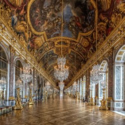
34 Rue du Dr Roux, 15B
appartement
€564.200
Uitnodigend appartement met ruime woonkamer, perfect voor iemand die in het hartje van Parijs wil wonen.
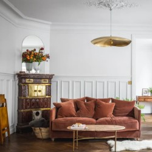
58 Rue Lemercier
rijhuis
€1.180.000
Ontdek een oase van rust en luxe met deze prachtige woning, voorzien van een ruime, lichtovergoten woonkamer en een uitnodigende tweede woonkamer met een prachtige afrikaanse afwerking. De moderne inrichting en topafwerkingen beloven een exclusieve levensstijl. Laat deze kans niet liggen om het huis van uw dromen te bezitten!
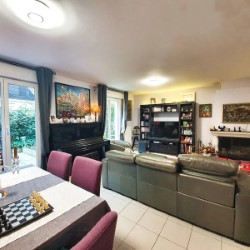
Manoir de la Falaise
villa
€1.826.000
Deze prachtige villa combineert traditionele architectuur met moderne voorzieningen. De aardetinten van de gevel, boogvormige deuropeningen en hoge cipressen creëren een sfeer van rust. De ruime buitenruimte beschikt over een ongerept zwembad, perfect voor ontspannen middagen.
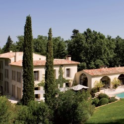
13 Rue Jean Zay, 7
appartement
€1.785.000
met 3 slaapkamers en een grote woonkamer is dit appartement ideaal voor een volledige familie. Volledig gerenoveerd in 2016, dit appartement zal voldoen aan al je eisen. Een totaaloppervlakte van 244m2, een tuin én een garage.
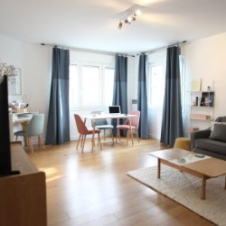
68 Rue Laugier
rijhuis
€768.300
Stap binnen in een wereld van stijl en comfort met deze prachtig ontworpen woonkamer, waar moderne elegantie en rustieke charme samenkomen tegen een achtergrond van authentieke bakstenen. Dit huis belooft een unieke woonervaring, perfect voor diegenen die een vleugje stedelijke verfijning zoeken in hun toevluchtsoord.
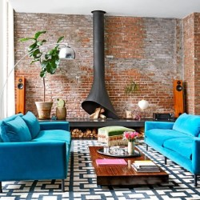
Auberge du Soleil
villa
€3.200.000
Deze majestueuze villa, met uitzicht op een serene waterpartij, straalt pure luxe en natuurlijke schoonheid uit. Een unieke kans om te wonen in weelderige elegantie.
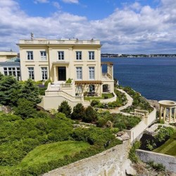
54 Bd du Montparnasse, 105
appartement
€964.500
Goed verborgen in de gezellige straatjes van Parijs, staat dit absoluut opmerkelijke huis te blinken. Een unieke glaspartij en een gelijkvloers met heel wat potentieel…
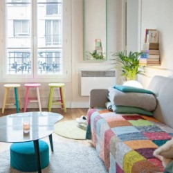
128 Rue Louis Rouquier
rijhuis
€440.000
Ontdek een oase van rust en stijl in deze prachtige woning, waar elk detail zorgvuldig is ontworpen om luxe en comfort te bieden. Met zijn ruime, lichtovergoten woonkamer en elegante inrichting, biedt dit huis de perfecte setting voor zowel ontspannen als entertainen. Laat deze unieke kans niet aan u voorbijgaan en maak van dit huis uw nieuwe thuis.
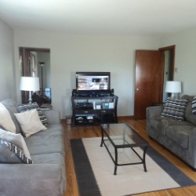
Le Nid Douillet
villa
€2.560.000
Deze prachtige Franse villa, gelegen in een idyllische omgeving, biedt een luxueuze levensstijl en een oase van rust. Met een adembenemend uitzicht op het omliggende landschap en een weelderige tuin, is dit huis een droom die uitkomt voor veeleisende kopers.
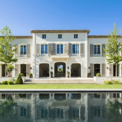
6 Rue Laromiguière, 85
appartement
€563.000
The sky is the limit. En al zeker als dit je startersappartement is. Op de 8ste verdieping kijk je uit over de franse buitenwijken en een zorgeloze toekomst. De geïnstalleerde keuken en badkamer zijn je garanties op comfort.
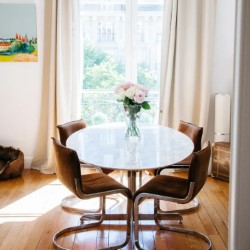
85 Rue des Rosiers
rijhuis
€902.000
Sommige huizen kunnen gewoon niet beschreven worden. Voor onze prijs is dit huis een prachtig koopje waar je geen seconde over zou moeten twijfelen. Met een splinter nieuwe badkamer en keuzen en 2 slaapkamers is dit het pronkstuk van HexaHome. Er bestaan niet veel huizen beter dan deze. Zeker kopen dus!
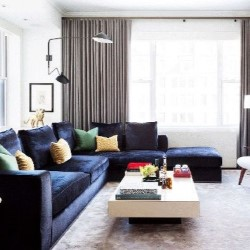
Le Petit Château
villa
€2.560.000
Deze prachtige Franse villa, gelegen in een pittoresk landschap, is een waar meesterwerk van elegantie en verfijning. Met een adembenemend uitzicht op de glooiende heuvels en wijngaarden, biedt deze woning een oase van rust en luxe.
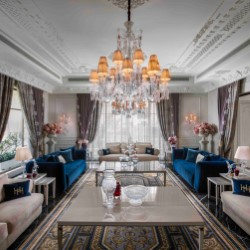
3 Rue du Pot de Fer, 603
appartement
€1.365.750
Dit appartement lijkt op eerste op zicht druk, maar wanneer u de rest van de foto's ziet beseft u dat het ideaal is voor een creatieve renovatie.
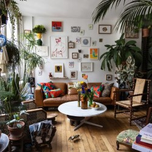
8 Rue de Lunéville
rijhuis
€2.540.000
Een luxe huis met maar 1 slaapkamer (enkel bed) en een gemeenschappelijke badkamer. Dit huis is ideaal voor een echte gamer. De woonkamer kan makkelijk getransformeerd worden tot een echte 'mancave'. zonder tuin en douche (heb je toch niet nodig he) waardoor je meer plaats hebt voor je 1:1 Hatsune Miku figurine en andere waardevolle voorwerpen.
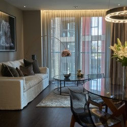